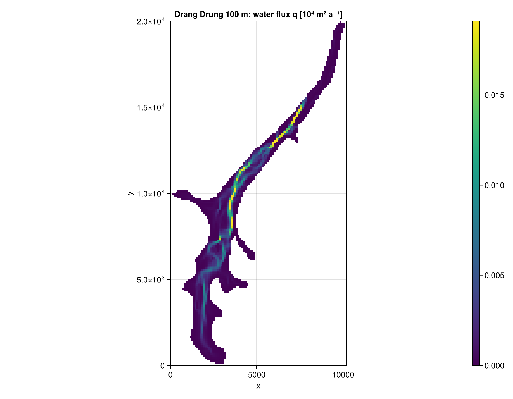
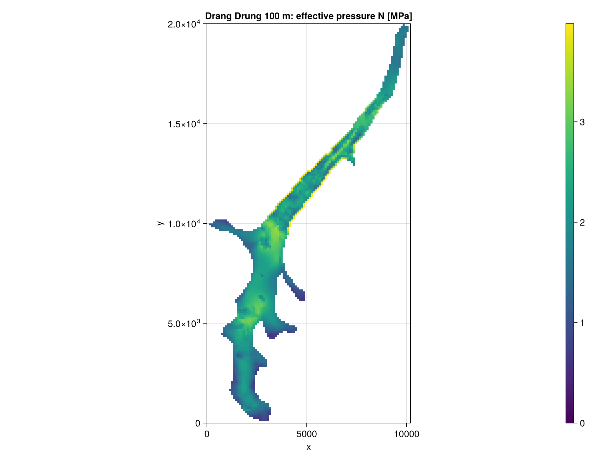
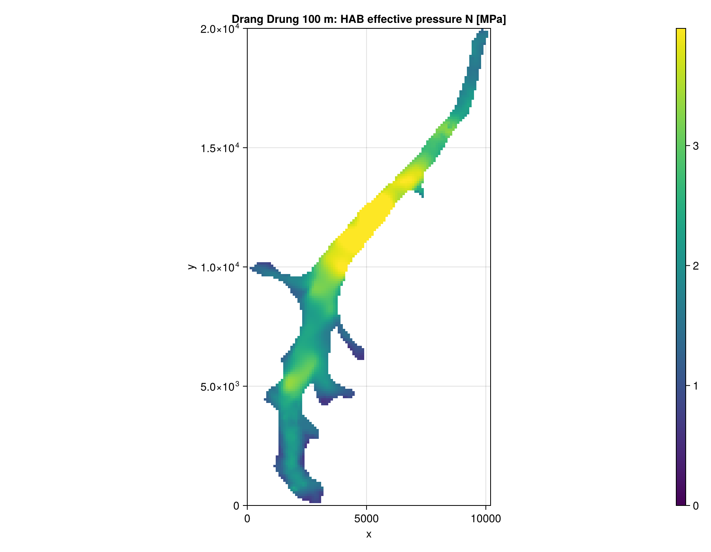
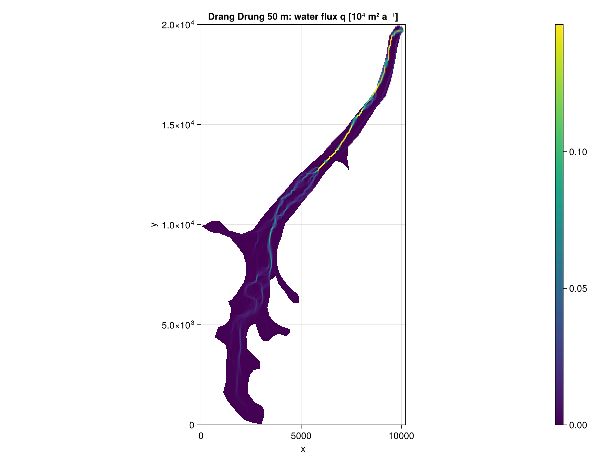
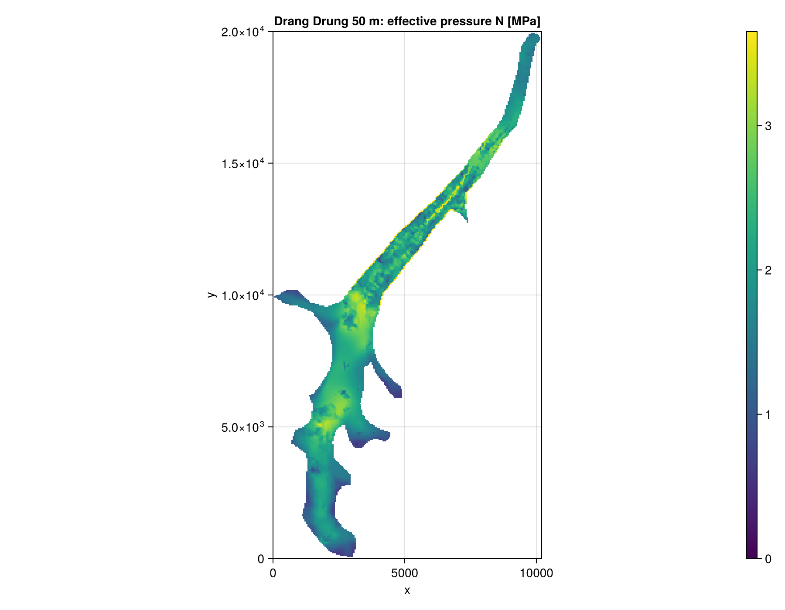
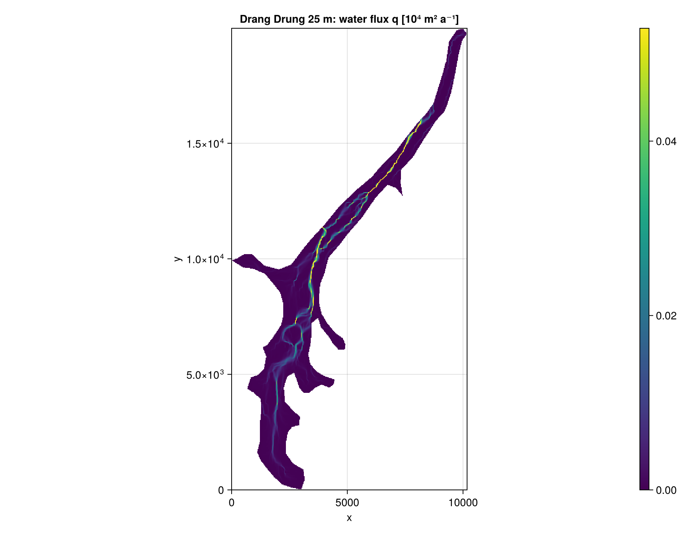
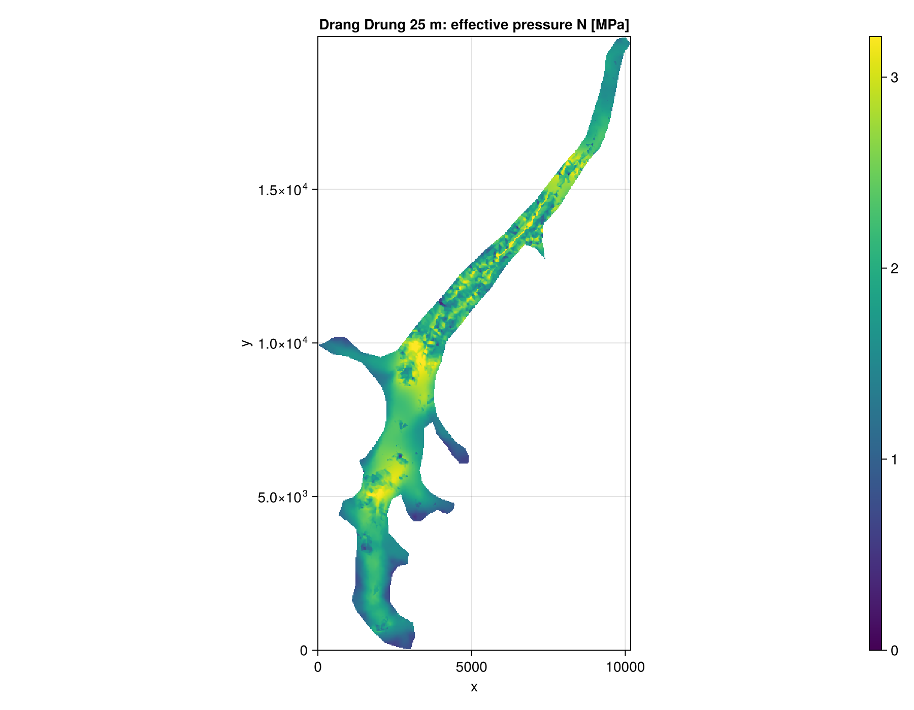
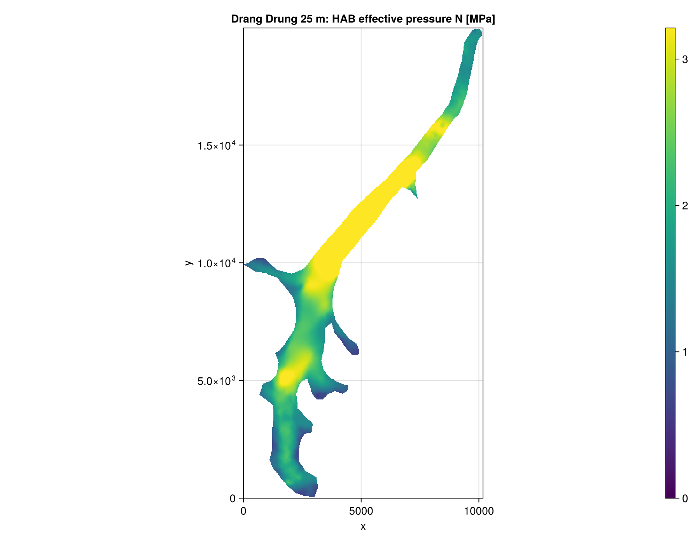

Drang Drung
K24 and HAB on Drang Drung Glacier, at 100, 50 and 25 m. The inputs are the grids used by Shakti.jl (thickness, bed, flow rate factor, geothermal flux), grounded where the Shakti mask is 0. The data has no velocity, so abs_v_b = 0, and the bed is hard with q_T = 0. The loader is load_drangdrung in docs/make_figures.jl. Default settings, coupling_length_kamb86 = 0.
using FastHydrology
import CairoMakie
# own arrays on a regular grid, SI units (see the Tutorial for what each one is)
Nx, Ny, xlims, ylims, mask, h, b, abs_v_b, A_visc, G, q_T, kappa = load_drangdrung(dx)
grid = ArrayHydroGrid(Nx, Ny, xlims, ylims)
state = HydroState(grid, mask, h, b)
model = KazmierczakHydroModel(grid, kappa, abs_v_b, A_visc, G, q_T; coupling_length_kamb86 = 0.0)
run!(SteadyStateSimulation(model, grid, state))
state_hab = HydroState(grid, mask, h, b)
run!(SteadyStateSimulation(HABHydroModel(grid), grid, state_hab))
visualize_field(grid, mask_field(perSecond2perYear.(model.q) ./ 1e4, mask, NaN);
plot_title = "q [10^4 m^2/a]", colormap = :viridis)
visualize_field(grid, mask_field(state.N ./ 1e6, mask, NaN);
plot_title = "N [MPa]", colormap = :viridis)
visualize_field(grid, mask_field(state_hab.N ./ 1e6, mask, NaN);
plot_title = "HAB N [MPa]", colormap = :viridis)Figures: K24 q, K24 N, HAB N. Colour bars are linear, from 0 to the 99th percentile of the grounded cells.
| Run | Grid | Grounded cells | K24 solve |
|---|---|---|---|
| 100 m | 102 x 200 | 2 695 | 2.4 ms |
| 50 m | 204 x 400 | 10 797 | 8.8 ms |
| 25 m | 407 x 799 | 43 246 | 35.4 ms |
100 m



50 m


25 m


